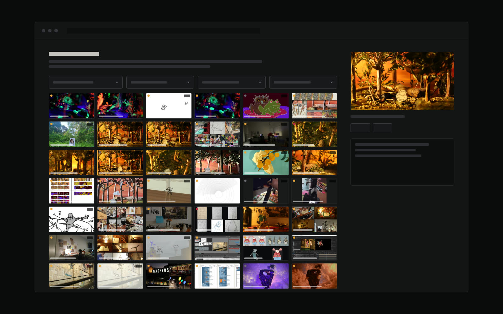
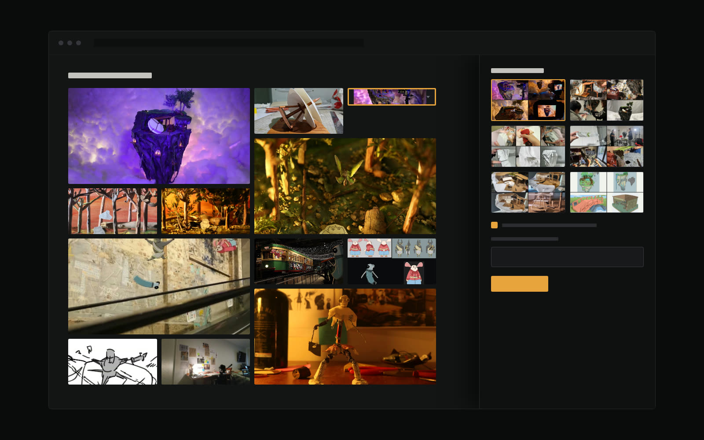
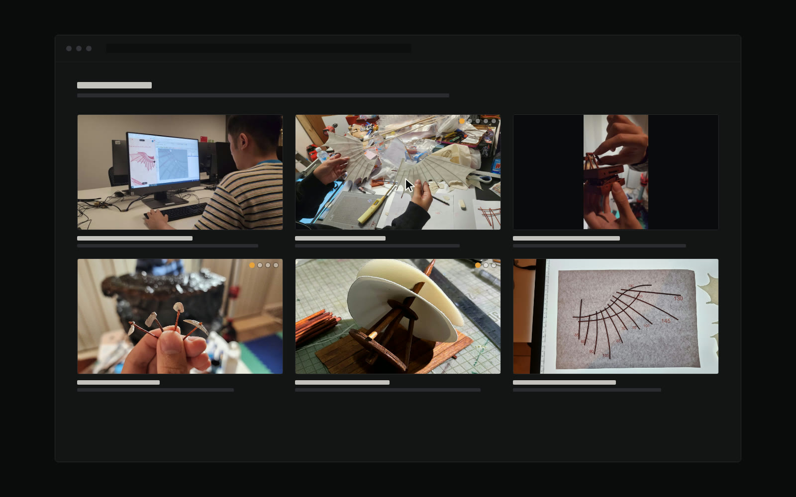
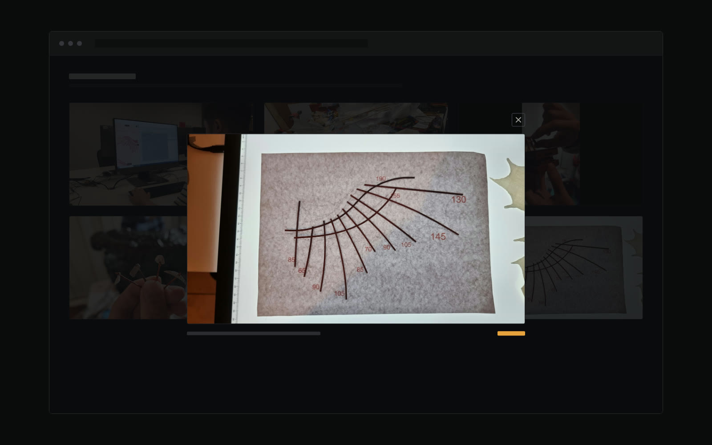

This Portfolio Site

The site you're reading is the project. It replaces a Wix template with a hand-coded static site — no page builder, no framework, no build step — designed and built by directing an agentic AI as the implementer while I held the design decisions, the source material and the final say on what shipped.
The interesting part wasn't asking for code. It was working out which decisions are actually mine: which images represent the work, whether a caption is true, when a pattern is right for the content, and when a "fix" has quietly made something worse.
Component Study
Designing the progression scrubber
The hardest interface problem on the site: how do you let someone understand a project's evolution without making them read nine captioned cards?
I had three patterns prototyped against real Vinci’s Voyage stages rather than placeholder boxes, so the choice rested on material I already knew — a timeline scrubber, an all-at-once progression strip, and a conventional filmstrip viewer. I threw out the filmstrip precisely because it was the most familiar: a thumbnail rail reads as “pick an image”, which is the gallery framing I was trying to escape.
The recommendation that came back was to ship two of them — the strip as an instant summary, the scrubber underneath it for the detail. I overruled it and built the scrubber on its own. The stage names carry the story before you touch anything, and a timeline is the native metaphor for animation work. It then took five rounds of refinement, most of them prompted by me spotting something wrong on screen.
One idea survived the prototype intact. A stage with no photograph yet renders as a marked gap rather than quietly disappearing — the prototype used an empty slot to show what a missing stage costs, and every project page still works that way.
What shipped is not what the prototype was. The track below is the real control, stripped of the viewer it normally drives so that the control is the thing you look at. Drag it. On a project page the same track sits under a picture and changes it; here it has only its own caption to change.
Buttons
Stage names along a rail, the current one lit, a counter reading position out of total. The rail stops at the first and last dot rather than running to the edge, so it reads as a measured timeline instead of a decorative line. At this point the dots were only buttons: click one, wait, click the next.
Drag
Then the dots became draggable and clicking through stopped being the only way across. Grab one and scrub. Hold near either end and the track pans itself to reach stages sitting off screen, and the edges fade only on the side that still has more track — the fade is a readout, not an ornament.
Motion
What you drag is not the dot. It is a blob with weight — it chases the pointer rather than tracking it, so lag grows the harder you pull, and it stretches toward your hand while a stage holds it. The dots stay put; they are the timeline. And the small mark above this one flags a stage holding a clip rather than a photograph.
Tooling
Choosing what goes on the page
Four films came to about 173 candidate frames. Picking twelve of them by scrolling a folder was the bottleneck, so I had a tool built for it.
The problem is not “is this a good photograph”. It is “does this still read at 260 pixels” — and most of the library are multi-panel collages built for a 1600×1000 viewer, which turn to mush that small. You cannot tell which from a filename. So the picker renders every asset at exactly the size it will ship at, and nothing bigger; the larger preview is what an image earns by surviving that test.

The asset picker
Every still and clip in one grid, filtered by project, status, kind and source. The dots flag what each file is doing — already in the sheet, used elsewhere on the site, referenced by nothing, or off the 16:9 ratio. Clips are in here too, shown through their poster frame.

The sheet editor
The same decision made on the real page instead of next to it. It serves the actual site, wires up every cell of the home-page contact sheet, and opens a drawer of candidates when you click one. Pick a frame and it is written straight into the page — alt text and all, because a cell with no alt is an unlabelled link.
It never crawls my drives. Anything dug out by hand gets dragged onto the page and staged in a holding folder, phone photos converted on arrival, and bringing one into the site stays a deliberate second step. Raw footage is the exception: a 281MB camera original is cut to a clip by giving the tool a path, so 99.9% of the file never moves.
Component
The media grid
For a set of things that belong together but are not in step and not in order — a reference clip, a printed guide, two angles on the same build.
The scrubber would be wrong here: it implies a sequence. A before/after would be wrong too, because a shared play button claims the clips run together. So this one has no shared transport at all, deliberately. Each tile previews on its own when you reach it, and nothing downloads until you do.

More than one frame per tile
A tile can hold several frames of the same subject. The dots say so at rest, so you know there is more before you touch it, and the extra frames are only fetched on the first hover. Leaving a tile keeps the frame you stopped on rather than snapping back.

Opened up
Any tile opens large, on whichever frame was showing, and steps from there — click, swipe, or the arrow keys. Half of all visitors have no pointer at all, so a dragging finger previews whatever tile it crosses; none of this may depend on hover to make sense.
Build
Stack & constraints
I chose plain HTML, CSS and JavaScript over a framework so the site stays hand-editable without a toolchain installed, and so it can be hosted free and indefinitely.
The progression scrubber ships as a plain captioned grid and is upgraded by JavaScript, so every stage stays readable with scripting off. Video lives on YouTube rather than in the repo — GitHub Pages is a poor host for 80MB files.
Method
How the work was actually split
Not "AI made a website". A loop, repeated dozens of times, with a clear division of labour.
- I set the direction and supplied the truth Which projects, which source folders, which photos are worth showing, what actually happened on each shoot. None of that is inferable — it came from my drives, my process documents and my memory.
- The agent mined, built and verified Reading raw project folders and Drive, selecting and compressing images, writing the HTML and CSS, then testing its own work in a real browser and reporting what broke.
- I reviewed against reality The step that matters most. The agent can describe what a photo looks like; only I know what it was. Several confidently-written captions and credits were wrong until corrected.
- Decisions stayed with me The agent put up every visual direction, component pattern and scope cut as options with a recommendation. I chose, rejected or reversed each one — including the recommendations I disagreed with.
Design Direction
Three routes, one chosen
Three visual worlds, built as working comps on the same copy and judged side by side. Nothing here is settled — the direction is still open, and these are the terms it will be decided on.
Dragonframe
Built from the capture software I actually shoot on — charcoal ground, recording-orange accent, monospace frame counters, a viewfinder hero and projects as a contact sheet.
Front runnerWorkshop Bench
The materials instead of the tools — kraft card, painter’s-tape labels, stencilled headlines.
Still openPremiere Night
The outcome instead of the making — letterboxed black, projector glow, projects as a festival programme.
Still openStatus: live, still moving
The site went live on 16 August 2026, three days ahead of the date I’d set myself. Every project page now carries its own process story and the copy is all in my own words. What it doesn’t have yet is the Dragonframe direction — what you’re looking at is still the first hand-coded design, and re-skinning the site is the next piece of work. This page gets updated as that lands.